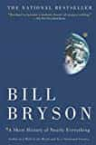

Daryush "Roosh" Valizadeh created ROK in October 2012. You can visit his blog at RooshV.com or follow him on Twitter and Facebook.


i
This book is a layman introduction to the natural sciences. It describes the origins of the universe and life through the fields of geology, astronomy, paleontology, chemistry, physics, and biology. What makes it a riveting read is that it doesn’t simply relay the facts to you—it tells you the stories, personalities, and human drama behind the discoveries. It also mentions the incorrect but humorous hypotheses that were widely accepted for long stretches of time.
America, Buffon wrote in his vast and much-esteemed Histoire Naturelle, was a land where the water was stagnant, the soil unproductive, and the animals without size or vigor, their constitutions weakened by the “noxious vapors” that rose from its rotting swamps and sunless forests. In such an environment even the native Indians lacked virility. “They have no beard or body hair,” Buffon sagely confided, “and no ardor for the female.” Their reproductive organs were “small and feeble.”
[…]
When tusks were discovered, they were forced into the animal’s head in any number of inventive ways. One restorer screwed the tusks in upside down, like the fangs of a saber-toothed cat, which gave it a satisfyingly aggressive aspect.
Another anecdote describes how some American paleontologists, confused at the fossils they were unearthing, reconstructed a fantastical animal on par with the mermaid or centaur.
Here are some additional highlights:
Every atom you possess has almost certainly passed through several stars and been part of millions of organisms on its way to becoming you.
[…]
When you sit in a chair, you are not actually sitting there, but levitating above it at a height of one angstrom (a hundred millionth of a centimeter), your electrons and its electrons implacably opposed to any closer intimacy.
[…]
…we live in a universe whose age we can’t quite compute, surrounded by stars whose distances we don’t altogether know, filled with matter we can’t identify, operating in conformance with physical laws whose properties we don’t truly understand.
[…]
In 1994, thirty-four thousand ice hockey gloves were swept overboard from a Korean cargo ship during a storm in the Pacific. The gloves washed up all over, from Vancouver to Vietnam, helping oceanographers to trace currents more accurately than they ever had before.
[…]
…there could be as many as thirty million species of animals living in the sea, most still undiscovered.
[…]
…there are three stages in scientific discovery: first, people deny that it is true; then they deny that it is important; finally they credit the wrong person.
[…]
For the next twenty years, even while on vacation, [Milankovitch] worked ceaselessly with pencil and slide rule computing the tables of his cycles— work that now could be completed in a day or two with a computer.
[…]
Some of these species existed for well over a million years, others for a more modest few hundred thousand, but it is worth bearing in mind that even the least successful had histories many times longer than we have yet achieved.
My main complaint with the book was that it was too short. A tackling of the entire world’s history should mean a 1000-page offering at the minimum, but instead we get only 478 pages. At the same time I understand this was intended for the average man, so my grievance comes mostly from already knowing a good chunk of the information presented.
Short History made it clear how much of the universe and our Earth that we simply don’t know, may never come to know, and how things we think we know today will be proven wrong in the future well after our deaths. When opening one box that you think leads to the truth, another box is present, and so it goes, a slow march to scientific knowledge and understanding. In 5000 years, I can only imagine the progress that will have been made at understanding our world, where future humans look back at us as unfortunate beings who lived in ignorance of the truth. That said, I highly recommend this book for those not well-versed in scientific history to understand just a bit of how we came to be.